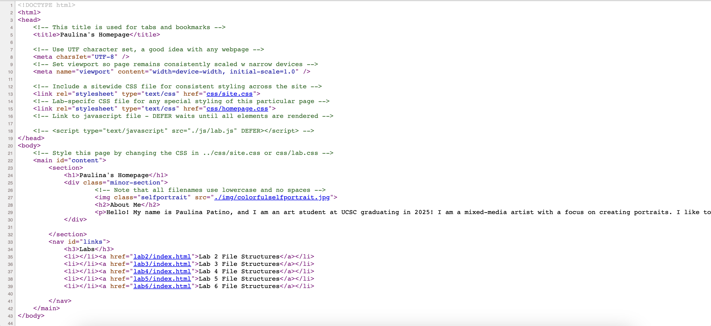
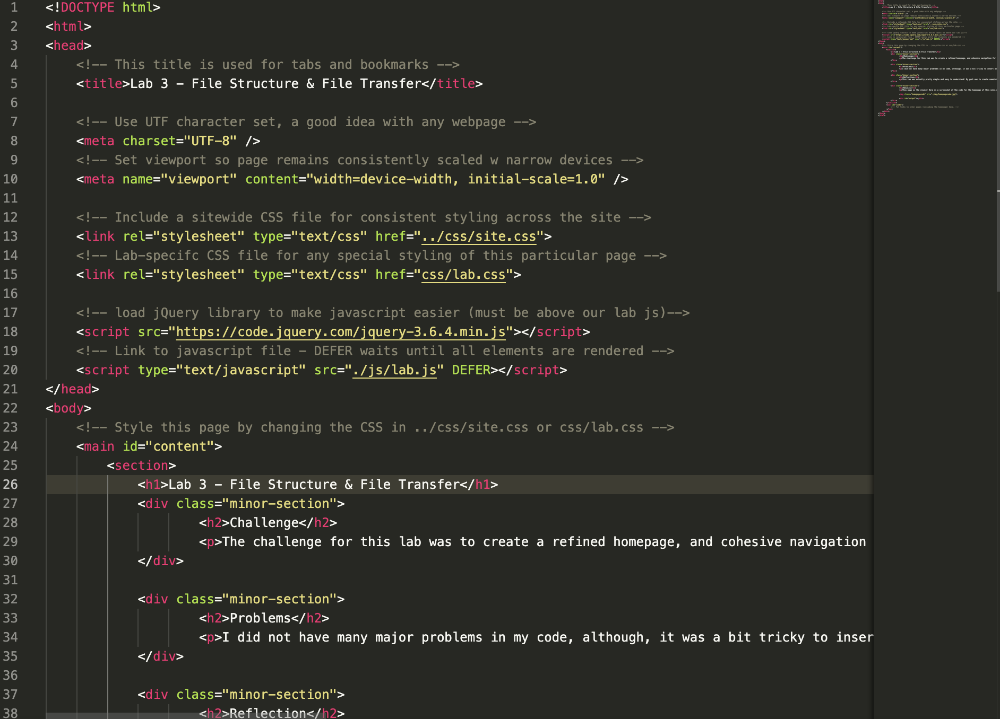
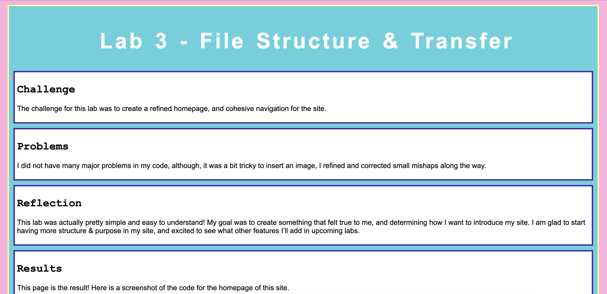

Lab 3 - File Structure & Transfer
Challenge
The challenge for this lab was to create a refined homepage, and cohesive navigation for the site.
Problems
It was a bit tricky to insert an image, I refined and corrected small mishaps along the way. It was lots of trial and error and insterting images ended up taking up most of the time. I also had a lopt of trouble linking the homepage to this site (lab3) because I forgort about adding periods to signify parent files. I have now learned from my mistakes...
Reflection
This lab was actually pretty simple and easy to understand! My goal was to create something that felt true to me, and determining how I want to introduce my site. I am glad to start having more structure & purpose in my site, and excited to see what other features I’ll add in upcoming labs.
Results
This page is the result! Here is a screenshot of the code for the homepage of this site.
Here is a screenshot of the HTML code for this page:
And finally, a screenshot of this very site:
